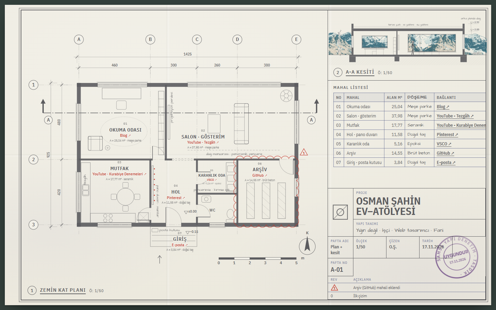
01 Ana SitePafta A-01 · Ev-Atölyesi
Poşeli duvarlar, aks balonları, ölçü zincirleri ve mahal listesi. A-A kesiti pencerelerinden Wada 167 Riso dağ manzarası akar, alt kenardan Gregor yürür.
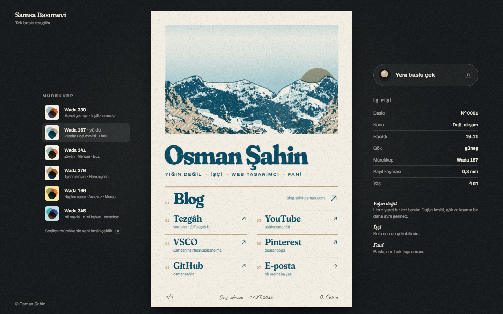
02Tek Baskı
Her ziyarette dağdan rastgele kesit, saate göre gök ve gerçek ay evresiyle 1/1 baskı basar. Bekledikçe kâğıt sararır; B ile yeni baskı çekilir, P ile mürekkep değişir.
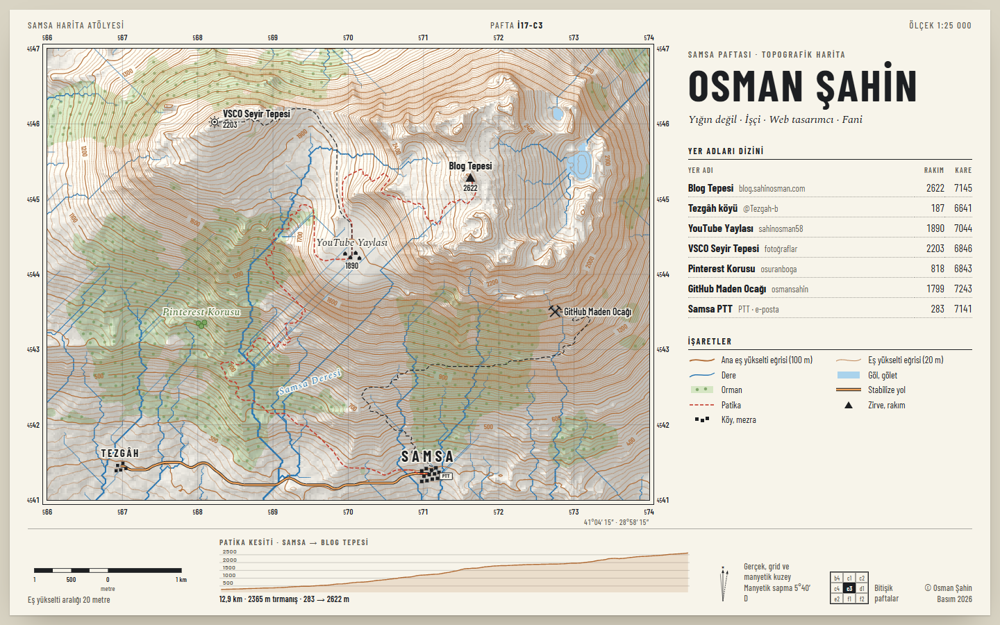
03Samsa Paftası
Yükseklik alanından üretilen 20 m ve 100 m eş yükselti eğrileri, akış dereleri, göletler ve eğime göre çizilen patikalar. Sağda yer adları dizini, altta patika kesiti yer alır.
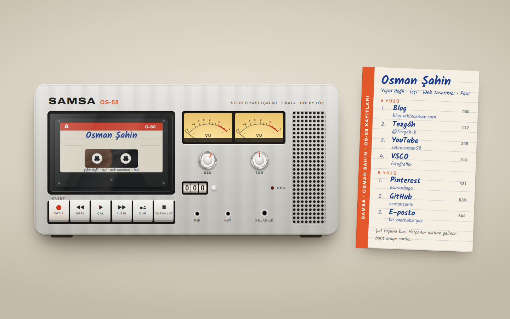
04OS-58 Stereo
Dönen makaralar, mekanik sayaç, VU ibreleri, ses/ton düğmeleri ve kilitlenen piyano tuşları. Çal tuşuna basınca Web Audio ile ses üretir; bağlantılar kaset kapağındadır.
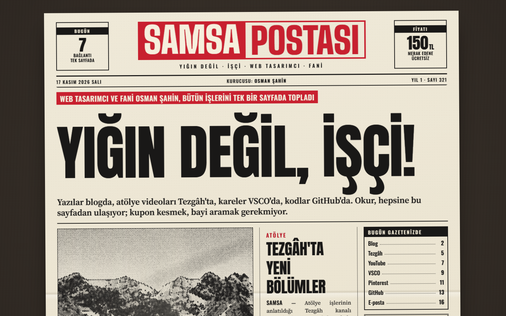
05Samsa Postası
Kırmızı kulaklar, büyük manşet, gazete tramıyla basılmış dağ fotoğrafı, başyazı, ilanlar ve küçük ilanlar. Katlama izli saman kâğıt üzerinde tam bir baskı sayfası.
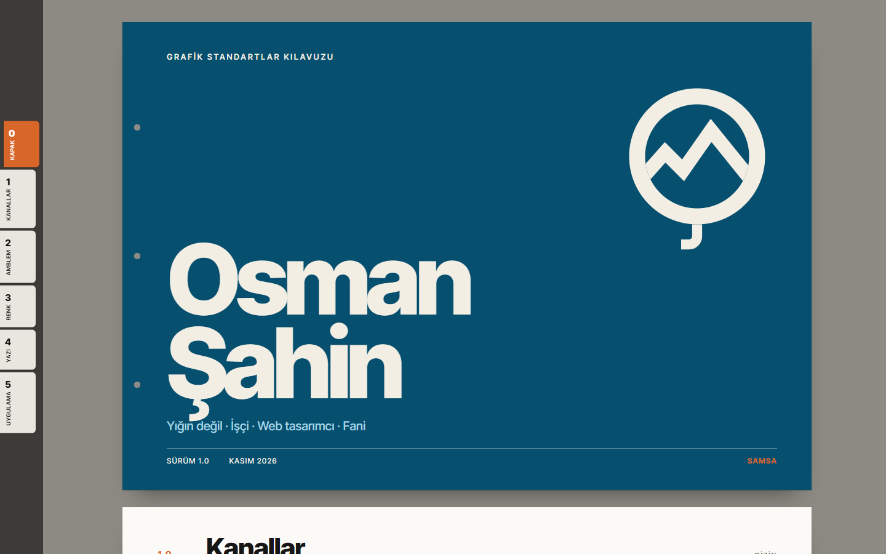
06Kimlik Kılavuzu
Kapak, dağlı Ş çengelli amblem inşası, koruma alanı, yanlış kullanım örnekleri, HEX/RGB/CMYK renk tabloları ve yazı numunesiyle sekmeli bir kurumsal kimlik kitabı.
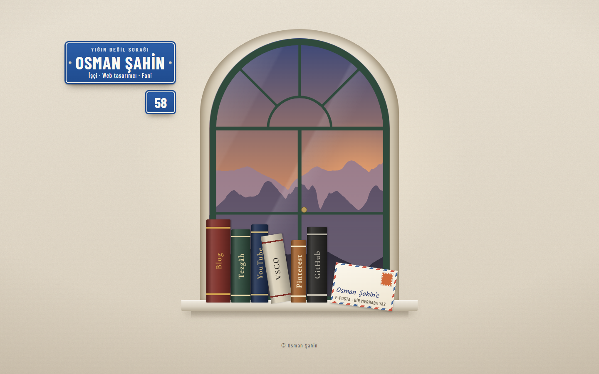
07Kemer
Sıvalı duvarda yelpaze kayıtlı pencere, günün saatine göre renk değiştiren gök ve paralaks dağ silueti. Bağlantılar pervazdaki kitap sırtlarında, ad sokak tabelasında durur.
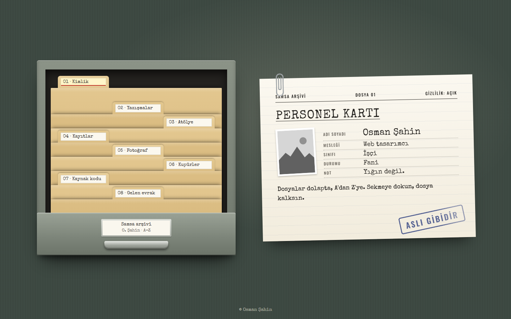
08Samsa Arşivi
Manila klasörler ve daktilo etiketler. Sekmeye dokununca dosya kalkar; yanında personel kartı, kontak baskı, dilekçe veya lastik damgalı daktilo evrakı açılır.
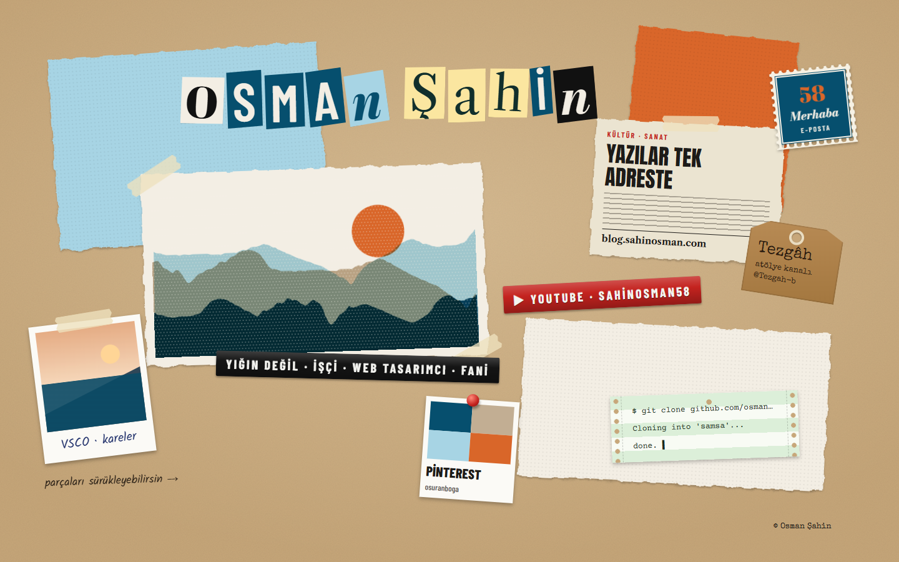
09Kolaj
Dergiden kesilmiş harfler, Dymo bant, yırtık riso baskı, gazete kupürü, kraft etiket, polaroid, sürekli form ve posta pulu. Masadaki bütün parçalar sürüklenebilir.
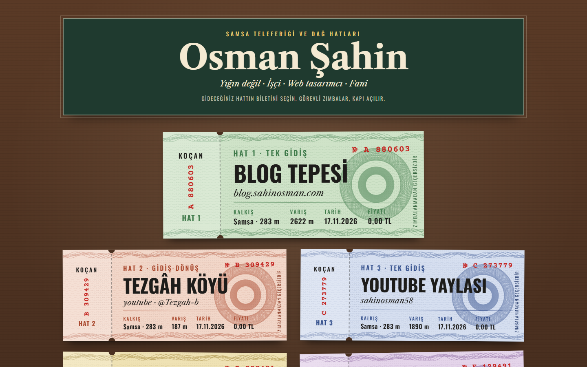
10Samsa Teleferiği
Gülloş desenli biletler, koçan çizgisi, perforaj ve kırmızı seri numaraları. Her hat bir bağlantıya çıkar; bileti seçtiğinde görevli kenarından zımbalar.
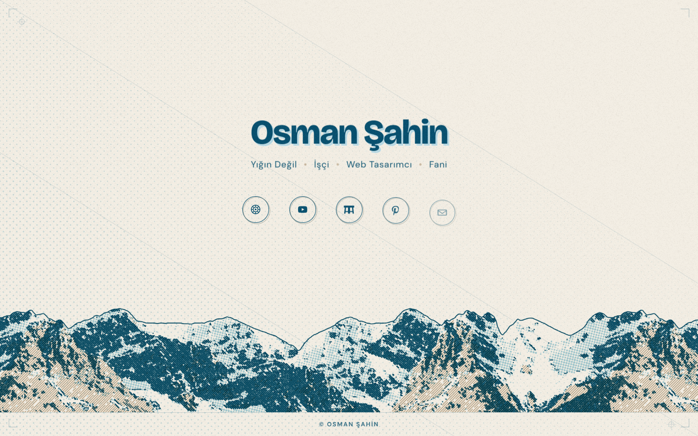
11Riso Panorama
Kök tasarıma en yakın sade tek sayfa Riso yorumu. Üç mürekkep kalıbı tek canvas şeridinde birleşip alttan kayar; P tuşu ile 10 farklı Wada Sanzo paleti arasında geçilir.